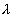

WebSim
WebSim
WebSim
WebSim
See the source HTML code for this page to see the simulation definition
that is parsed and executed by the WebSim applet.
MDP: A Markov Chain (an MDP with only a single
action in each state). State space is a section of the number
line from [-1,1]. The initial state is -1. The absorbing state is 1 and
has a defined value of 0. The input to the neural net is the position on
the number line (state). Each transition generates a reinforcement of 1.
Function Approximator: a
single-hidden-layer sigmoidal network with 8 nodes in the hidden layer.
Learning algorithm: N/A (TD()
does not perform gradient descent on a single error function)
RL algorithm: TD()
Displays:
1) Variables and Rates (upper left
corner)
2) 2D graph of log error vs.
learning time (upper right corner)
3) 3D graph of value function
(lower left corner)
Value Function Display: Remember that the value of a state is the sum of the reinforcements received when starting in that state and performing successive transitions until the absorbing state is reached. The X-axis corresponds to state space. The Z-axis (height) is the value in each state. The Y-axis (depth) has no meaning.
Suggestions for Experiments: To change the value of lambda peform the following steps. Copy the source of this page to your hard drive. Next, simply change the value of the "lambda" parameter in the simulation defintion. Remember that it may be necessary to decrease the value of the learning rate parameter "rate" for larger values of lambda. It might be necessary to download a complete copy of WebSim and load the class modules from a local drive. This dramatically reduces the time required to execute experiments. Click here to find a more complete description of WebSim(c) and how it can be used to perform experiments for many different RL algorithms and MDPs.
Back to Tutorial.